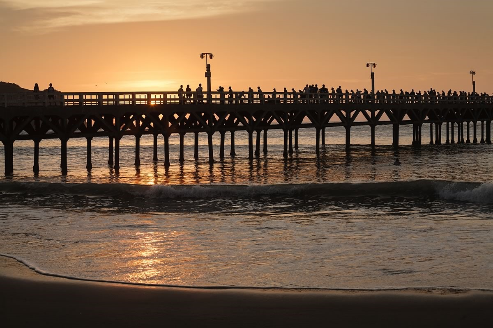
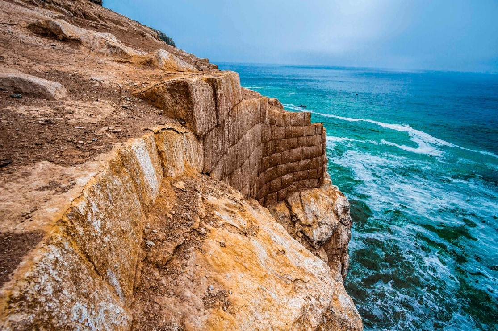
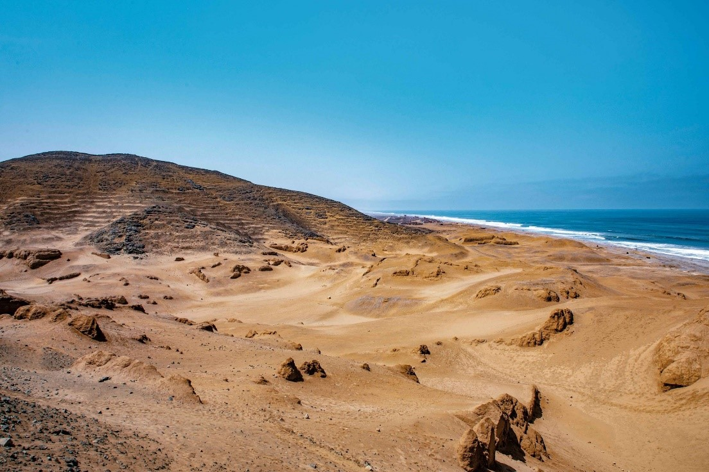
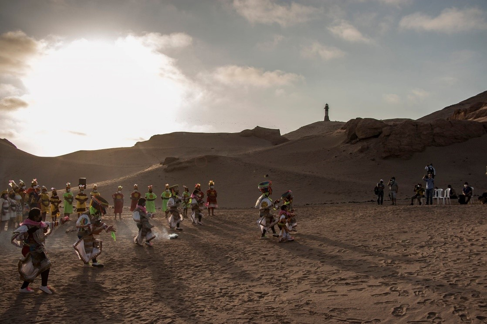
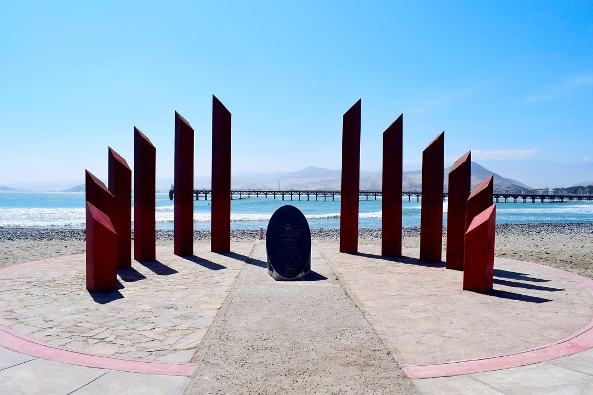
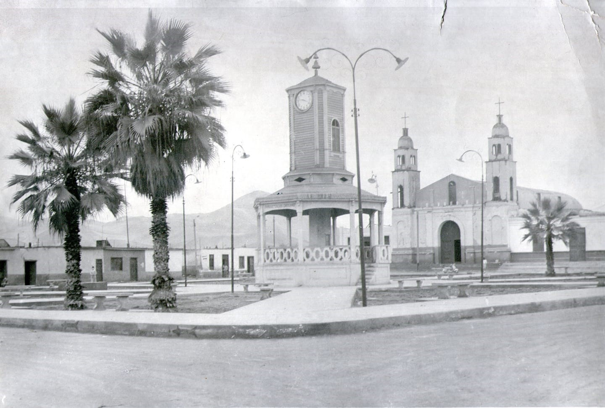
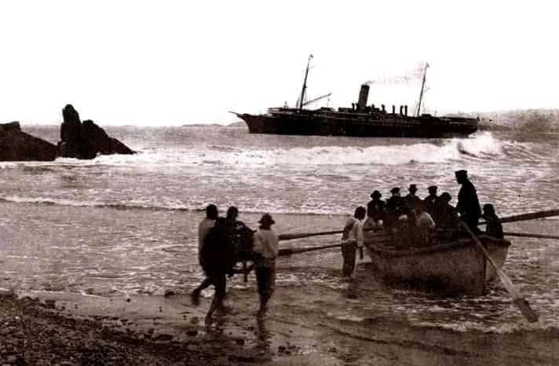

Historia
Cerro Azul se ubica al sur de Lima en el kilómetro 132 de la carretera Panamericana sur, es un distrito y balneario de la provincia de Cañete, donde los atardeceres irradian belleza y frescura brisa marina. Según el censo de 2016, Cerro Azul tiene una población de 6,983 habitantes (Fuente INEI), representando un 4 a 5% de la población de Cañetana.
La población urbana y no urbana del distrito se encuentra sectorizada en varios asentamientos humanos y sectores.
- Pueblo de Cerro Azul (Cercado)
- AA. HH Nuevo Cerro Azul
- AA. HH Hurtado de Mendoza
- AA. HH Las Lomas de Ihuanco
- AA.HH. Santa Fe de Veracruz
- Sector Puerto Viejo
- Sector del Puerto de Cerro Azul
- Sector Urbano Casa Blanca
- Sector Urbano Señor de Los Milagros
- Un. Agropecuaria Bellavista
- Un. Agropecuaria Miraflores
- Un. Agropecuaria Puente Tabla
Cerro Azul posee una rica historia que se remonta a los Huarcos, un pueblo prehispánico que habitó en la región. De ellos quedan como vestigios la gran fortaleza de barro y piedras ubicada entre los cerros Camacho y Centinela, utilizada para ceremonias y rituales. Los Huarcos fueron invadidos por los Incas, quienes remodelaron la fortaleza con construcciones de muros de piedra, un centro ceremonial, grandes plazas y una escalera de piedra hacia el mar.
El sitio, que cubre aproximadamente 35 hectáreas, presenta arquitectura inca del período Horizonte Tardío (1470-1532 d. C.) y es parte del Qhapaq Ñan, el sistema de caminos inca. Fue declarado Patrimonio Cultural de la Nación en 2004. La fortaleza protegía al puerto de las invasiones y servía como posible lugar de descanso del Inca, hasta la llegada de los españoles.
En la colonia, Cerro Azul conservaba la fortaleza Huarco para el uso de sus bodegas como almacenes de la actividad agrícola. Más tarde, se convirtió en un puerto con enfrentamientos con piratas y corsarios. En 1742, la orden “Religiosos de los Crucíferos de la buena muerte” fundó la “Capellanía Colativa” que comprendía la viña Casa Blanca y la Quebrada.
Con la llegada de la República, Cerro Azul tuvo un auge portuario con la exportación de guano, azúcar y algodón. En 1867, se construyó el ferrocarril y, posteriormente, el primer muelle de fierro y madera. Cerro Azul y San Luis eran anexos de San Vicente. Entre 1849 y 1874, la actividad agrícola motivó el tráfico de chinos y braceros japoneses. En 1922, se construyó el muelle de concreto.
El 16 de agosto de 1925, Cerro Azul se constituyó como distrito. En 1932, 175 comuneros convirtieron una zona eriaza del Ihuanco en terrenos productivos mediante la reutilización de aguas residuales de regadío en pampa Imperial.
Cultura
Cerro Azul cuenta con un patrimonio histórico y cultural muy rico. Es el primer puerto donde desembarcó la primera migración japonesa a Latinoamérica, motivo por el cual cuenta con un monumento en su conmemoración. Desde su patrimonio arqueológico hasta sus festividades y gastronomía, Cerro Azul es un punto de interés cultural significativo.
El Complejo Arqueológico el Huarco es uno de los principales atractivos de Cerro Azul. Además, el distrito es conocido por sus danzas tradicionales, como la Danza de los Negritos Españoles y la Danza de las Pallas. El solsticio de verano se celebra con la danza de tijeras, que inicia con un pago a la tierra para la llegada del Inca y el inicio del verano.
La gastronomía en Cerro Azul está influenciada por su ubicación costera. Platos típicos como el charquicán, la sopa atómica, la sopa hidráulica y el tradicional ceviche son representativos de la cocina local. La pesca artesanal es clave en la economía del distrito, reflejada en la variedad de ingredientes marinos utilizados.
Los postres típicos tradicionales de Cerro Azul incluyen el champú de arroz, la humita, los picarones y el camotillo. Las festividades son momentos clave para la expresión cultural. Durante estas celebraciones, las danzas tradicionales y comidas típicas crean un ambiente festivo que une a la comunidad. La vendimia en San Juan de Ihuanco también es una tradición importante.
Cerro Azul no solo es un sitio arqueológico, sino también un cruce entre tradiciones ancestrales y prácticas contemporáneas. Las comunidades locales continúan preservando sus costumbres y tradiciones, lo que otorga a Cerro Azul un lugar especial en el patrimonio cultural del Perú.
Influencia China, Africana y Japonesa
Cerro Azul ha sido un punto de encuentro para diversas comunidades, incluyendo a chinos, japoneses y africanos, cada uno de los cuales ha dejado una huella significativa en la cultura y la historia del distrito.
La Colonia China en Cerro Azul
La llegada de la colonia china a Cerro Azul se enmarca dentro del contexto de la migración china al Perú en el siglo XIX. Esta migración fue impulsada por la necesidad de mano de obra en las haciendas agrícolas, especialmente en la industria azucarera.
A finales del siglo XIX, muchos inmigrantes chinos comenzaron a establecerse en Cerro Azul y sus alrededores, buscando mejores oportunidades laborales. Con el tiempo, formaron comunidades que contribuyeron al comercio local y a la economía agrícola.
La Comunidad Japonesa en Cerro Azul
La llegada de la comunidad japonesa a Cerro Azul es un evento histórico significativo que ocurrió el 3 de abril de 1899, cuando un grupo de inmigrantes desembarcó en el puerto del distrito a bordo del barco Sakura Maru.
En 1999, se inauguró un parque conmemorativo en Cerro Azul para honrar la llegada de los japoneses. Este parque cuenta con un monumento que simboliza su contribución al desarrollo del distrito.
La Comunidad Africana en Cerro Azul
La llegada de la comunidad africana a Cerro Azul está ligada a la historia de la esclavitud en el Perú y su impacto en la agricultura y la economía local. En Cerro Azul, al igual que en otras partes del valle de Cañete, los africanos fueron utilizados como mano de obra en las haciendas azucareras.
A pesar del sufrimiento y la opresión, los africanos y sus descendientes hicieron contribuciones significativas a la cultura peruana. Su influencia se puede observar en la música, danza, gastronomía y otras expresiones culturales que han perdurado hasta hoy.
Anexos
Muro elaborado con piedras labradas de estilo Inca Imperial en el acantilado del cerro Centinela. Proyecto Qhapaq Ñan

El complejo El Huarco tiene una extensión aproximada de 32 hectáreas y está conformado por varios sectores. Proyecto Qhapaq Ñan

Solsticio de verano representa la cultura pre Inca de Cerro Azul, ceremonia de pago. Proyecto Qhapaq Ñan

Parque de conmemoración a la inmigración japonesa se encuentra localizado en la zona de Puerto Viejo

Plaza de Armas de Cerro Azul, 1970

Foto del 03 de Abril de 1899, desembarcaron en el Puerto de Cerro Azul por primera vez los inmigrantes japoneses. Los primeros inmigrantes que se asientan en el distrito son las familias Maeda, Watanabe, Hirakawa, Takase
